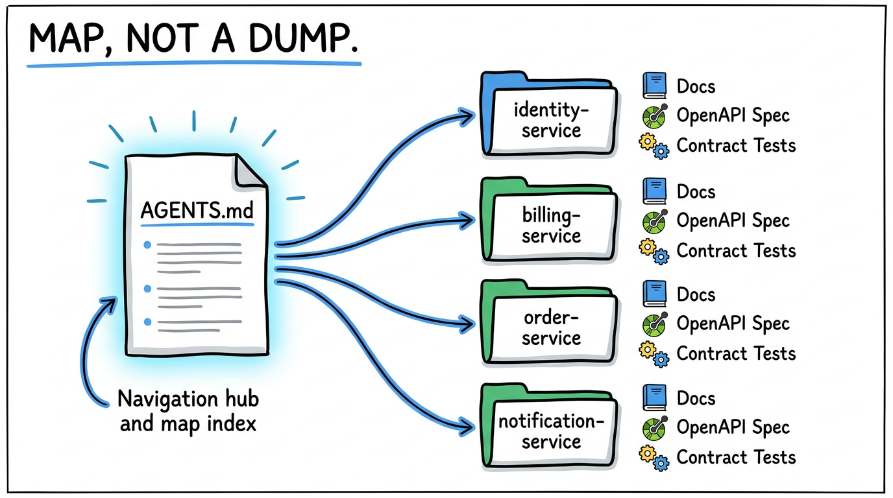
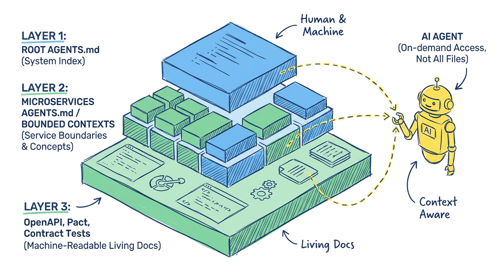
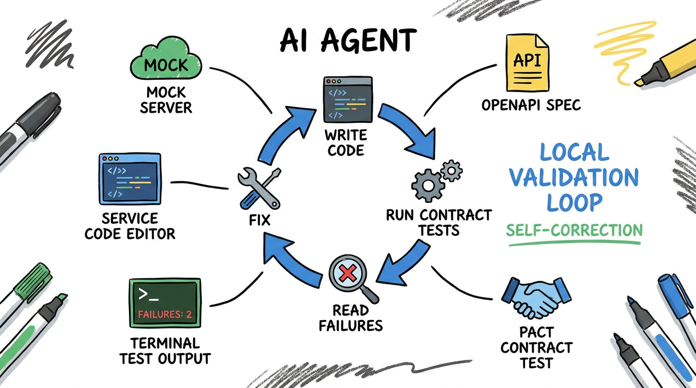
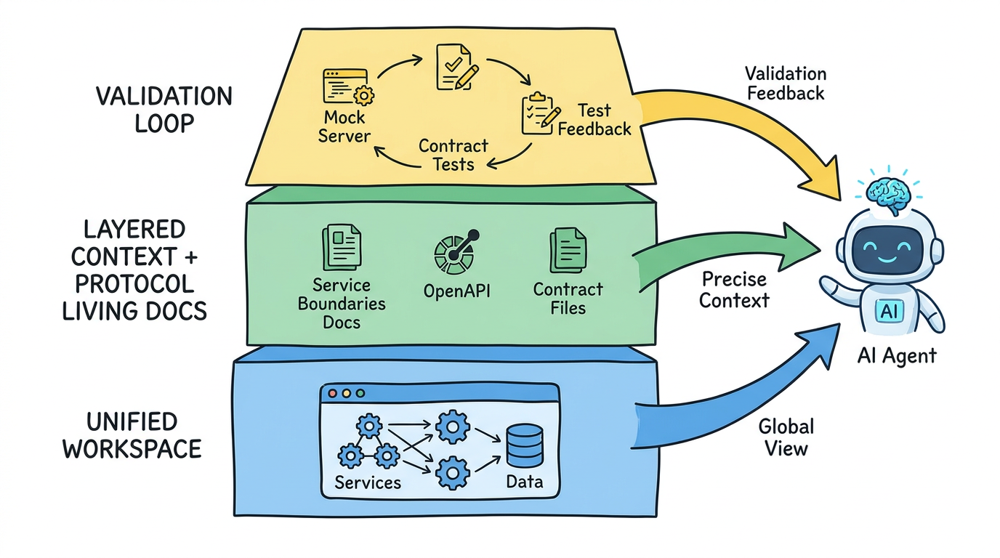

十几个微服务，怎么让 AI Agent 真正参与系统设计和编码？
前两天看到一张图，讲怎么在很多微服务之间使用 AI Agent。
里面有个问题很典型。
一个公司有十几个微服务，现在想让开发用 Agent 来做系统设计和编码。但一个 user story 经常不是改一个服务就结束了，它可能从前端进来，穿过用户服务、订单服务、库存服务、支付服务，最后还要落到消息队列和异步任务里。
这时候你把任务丢给 Agent，它要理解的就不是某一段代码。
它要理解边界。
哪个服务拥有用户状态，哪个服务只是缓存一份投影；哪个字段是外部合同，哪个字段只是内部实现；哪段逻辑能改，哪段逻辑一改就会影响下游对账。
问题就在这里。
单体应用里，Agent 至少还能在一个代码树里一路 grep 下去。微服务系统里，真正麻烦的是那些没有写在一个文件里的知识：职责边界、业务概念、调用约定、历史债、异常语义、重试策略、幂等规则。
所以很多团队的第一反应是，把所有微服务放到一个 workspace 下面，每个服务配自己的文档，让 AI 自己读。
这个方向对吗？
我自己的判断是：对，但远远不够。
把仓库放在一起，只是把门打开了。Agent 能不能真的干活，取决于你有没有给它一张地图，以及它改完以后能不能自己验证。

一个 workspace 是必要条件，但不是充分条件
先承认一点，把多个服务放到一个 workspace 下，确实是目前很务实的做法。
如果你本来就是 monorepo，那很适合 Agent。
schema 定义、API 协议、共享类型、服务实现、测试代码，都在一个地方。Agent 不需要在十几个仓库之间来回切换，也不需要靠你一段段复制上下文。它可以自己搜索调用链，自己找接口定义，自己对照测试。
这对 Agent 很重要。
因为 Agent 最怕的不是代码多。
它最怕的是缺关键上下文。
一个用户故事跨了三个服务，如果 Agent 只看到了其中一个服务，它就很容易做出局部正确、系统错误的设计。它可能在订单服务里加了一个状态，却不知道支付服务已经用另一个字段表达同一件事；它可能改了一个返回结构，却不知道前端 BFF 和下游数据同步任务都依赖这个结构。
如果历史原因不方便合成 monorepo，也没必要硬迁移。
一个折中办法是虚拟 monorepo：把多个仓库 clone 到同一个本地目录里，外面套一层统一的 workspace。代码仍然是多个 repo，日常发布和权限边界不变，但 Agent 工作时能看到一个相对完整的系统视图。
这一步能解决很多基础问题。
但它解决不了全部。
因为“看得到”不等于“看得懂”。
十几个服务全部摊在 Agent 面前，有时候不是帮助，而是噪音。你给它一整座城市，它也许能找到路，也许会迷路。真正有用的不是把所有东西都塞进上下文，而是告诉它从哪里开始，哪些东西相关，哪些东西暂时不用看。
这就是 Context Engineering 的核心味道。
Anthropic 在讲 context engineering 的时候，有个判断我很认同：Agent 不是上下文越多越好，而是要在正确时间拿到正确上下文。上下文窗口再大，也不应该变成垃圾场。
放到微服务里，这句话尤其要紧。
Agent 需要的不是文档堆，而是服务地图
很多团队会说，我们有文档。
但你点进去一看，经常是这种形态：Confluence 里几百页，接口文档散在几个目录，架构图是三年前的，某个 README 写着“详见新版本文档”，新版本文档又链接回旧页面。
人都不愿意看。
Agent 更不会神奇地看懂。
给 Agent 的文档，最好不要从“大而全”开始，而是从“地图”开始。
我会建议做三层。
第一层，根目录放一份总索引。
可以叫 AGENTS.md，也可以叫 CLAUDE.md，名字没那么重要，关键是它的职责要清楚：告诉 Agent 这个 workspace 里有哪些服务，每个服务负责什么，改某类需求时应该先看哪些目录，哪些命令可以跑，哪些命令不能随便跑。
它不是百科全书。
它是机场指示牌。
比如：
1 | /identity-service |
这种信息对 Agent 的价值非常高。
它不需要一上来读完所有服务的所有文档。它先读根索引，判断当前 user story 可能涉及 identity、billing、notification，然后再去加载这几个服务的细节。
第二层，每个服务目录里放自己的边界说明。
这份文档不要写成“本服务采用 Spring Boot + MySQL + Redis”。这些 Agent 读代码就能知道。
真正该写的是代码里不容易直接看出来的东西：
这个服务拥有哪些业务事实？
哪些概念属于它，哪些概念只是从别的服务同步过来的？
它对外承诺哪些 API 语义？
哪些字段不能随便改名？
哪些状态转换有业务含义？
哪些下游调用依赖幂等、重试、顺序或最终一致性？
这其实就是 DDD 里的 bounded context，只是你不用把它写得像 DDD 教材。Agent 不需要口号，它需要边界。
第三层，给 Agent 明确上下文路由规则。
比如：
1 | 如果任务涉及“用户是否有权限购买套餐”，先读： |
这类规则很土。
但很有用。
它相当于把资深工程师脑子里的“先看哪里、别碰哪里、这里以前踩过坑”写下来。对人有帮助，对 Agent 更有帮助。

文档最大的问题，是它会老
但只靠文档还有一个硬伤。
文档会老。
而且微服务文档老得特别快。
一次接口新增字段，一次错误码调整，一次异步事件 payload 改动，一次数据库状态枚举扩展，都可能让文档和代码开始偏离。人类工程师有时候还能靠记忆和群聊补齐，Agent 没有这种组织八卦能力。
它会相信你给它的上下文。
过期文档对 Agent 的伤害，比没有文档还大。没有文档时，它至少会去读代码、跑测试、问你确认；过期文档会给它一种虚假的确定感。
所以我越来越倾向于一个原则：
能从代码或规格生成的，就不要手写。
OpenAPI spec 就是典型例子。
一份写得好的 OpenAPI，不只是给人看的接口文档。它还可以生成 SDK，生成 mock server，生成 contract test 的输入，甚至作为 Agent 理解服务边界的机器可读材料。
它比一段“用户服务提供登录接口”的自然语言可靠得多。
因为它会告诉 Agent：
这个 endpoint 是 POST /sessions。
请求体有哪些字段。
哪些字段必填。
响应状态码有哪些。
错误结构长什么样。
这就从“描述”变成了“规格”。
更进一步，如果你已经有 Pact 契约文件，或者有成熟的 consumer-driven contract testing，那就更好。
因为 contract test 本身就是活文档。
它不是某个人写在 wiki 里的愿望，而是调用方真实依赖的接口形状。调用方说，我实际用了这些字段、这些状态码、这些交互序列。被调方每次变更，都要验证自己仍然满足这些契约。
这东西对 Agent 很值钱。
它可以读契约，知道服务之间真正发生了什么；也可以改完代码以后跑契约测试，知道自己有没有破坏别人。
微服务里最容易出问题的地方，恰好就是“我以为没人用”和“你怎么会这么用”。
契约测试把这两句话提前变成测试失败。
这比事后开会体面多了。
真正难的是验证，不是生成代码
很多团队引入 Agent 的时候，最先关注的是代码生成质量。
这个当然重要。
但在微服务场景里，我觉得更应该先问另一个问题：Agent 写完以后，它怎么知道自己没搞坏？
单服务还好办。
跑单元测试。
跑类型检查。
跑本地集成测试。
最多再起一个数据库和 Redis。
跨微服务就麻烦了。一个 user story 可能涉及三五个服务，外加消息队列、对象存储、第三方支付、权限系统。你不可能让 Agent 每改一次代码，就把完整生产级环境在本地跑起来。
就算能跑，成本也太高。
于是很多 Agent 工作流会卡在这里：它能写代码，但验证不了；它能解释方案，但不知道方案在系统里能不能跑通。最后还是人来做集成验证，人来盯日志，人来判断哪里不对。
这就回到了老问题。
人，重新变成循环里的慢部件。
要让 Agent 真正参与系统设计和编码，你得给它一个更轻的验证环境。
我的建议是，每个服务至少提供两类东西。
一类是 mock server。
它可以手写，也可以基于 OpenAPI spec 自动生成。关键是 Agent 在改某个服务时，不需要把所有依赖服务都真实启动起来。它可以面对一个足够稳定的模拟对手，验证自己的请求格式、响应处理和异常分支。
另一类是 contract test。
它验证的不是“整个业务流程是不是完全正确”，而是“服务之间约定的协议有没有被破坏”。
这个边界很重要。
端到端测试当然有价值，但它太重，不适合作为 Agent 高频自我修正的主循环。contract test 更轻、更快、更贴近服务边界，适合放在 Agent 的本地工作流里。
一个比较实用的闭环是这样：
Agent 读根 AGENTS.md。
定位相关服务。
读取服务边界文档、OpenAPI spec、契约文件和相关测试。
提出设计。
修改代码。
启动 mock server。
跑 contract test。
根据失败信息自我修正。
再跑。
直到测试通过，或者明确停下来告诉人类：当前契约和需求冲突，需要你做产品或架构判断。
这才是 Agent 真正能干活的地方。
不是一次把代码写对。
而是它写错了以后，有一个系统能让它知道错在哪里。

不要让 Agent 直接面对整个系统
这里还有一个容易被忽略的点。
很多人把“让 Agent 理解全局”理解成“让 Agent 读取全部”。
这两个不是一回事。
一个资深工程师做跨服务设计，也不会把十几个服务每一行代码都读完。他会先建立系统地图，找到相关边界，再深入关键路径。Agent 也应该这么工作。
所以 workspace 的设计目标，不是让 Agent 一次性吞掉整个系统，而是让它能按需导航。
这也是我觉得根 AGENTS.md 特别重要的原因。
它不是为了喂满上下文。
它是为了减少上下文。
好的索引，会把 Agent 从“全仓库漫游”拉回“任务相关路径”。好的服务文档，会把 Agent 从“读代码猜业务”拉回“先理解边界，再看实现”。好的契约测试，会把 Agent 从“我觉得这样没问题”拉回“协议有没有被破坏”。
这三件事组合起来，才像一个可运行的 Agent 工作台。
Anthropic 在 long-running agents 那篇文章里提到一个很实在的做法：长任务要给 Agent 搭 harness，包括进度记录、验证脚本、干净的工作状态，让它能跨长时间任务继续推进。
放到微服务协作里，harness 不是一个抽象概念。
它就是这些东西：
AGENTS.md。
服务边界文档。
OpenAPI spec。
mock server。
contract tests。
本地启动脚本。
测试命令。
失败时该看哪里的日志。
哪些目录只读。
哪些变更必须人工确认。
这些东西看起来不酷。
但它们决定 Agent 是“会写代码的聊天框”，还是“能在你们系统里工作的工程同事”。
一个更靠谱的三层搭法
如果让我给一个十几个微服务的团队设计 Agent 工作方式，我不会从“买哪个 Agent 产品”开始。
我会先搭三层。
第一层，统一 workspace。
能 monorepo 就 monorepo。不能就虚拟 monorepo。至少让 Agent 在一个地方看到相关服务、共享协议、测试和文档。
这一层提供全局视图。
第二层，分层上下文。
根目录有系统索引，每个服务有边界说明，协议规格尽量机器可读。人写的文档只写代码和 spec 难以表达的内容，比如业务语义、历史决策、例外规则、危险区域。
这一层提供精准上下文。
第三层，验证闭环。
每个服务提供 mock server 或模拟依赖，核心服务之间建立 contract test。Agent 改完以后，必须能在本地跑一组足够快、足够准的验证，而不是把所有风险都留给人类集成测试。
这一层提供自我修正能力。
这三层搭起来以后，Agent 的工作方式会发生变化。
以前你可能是这样用：
“帮我改一下订单状态逻辑。”
然后你把相关代码贴给它，它改一版，你再告诉它哪里不对。
新方式应该更像这样：
“根据根 AGENTS.md，处理 story-123。先识别涉及的服务和契约，提出设计，不要修改无关服务。改完后启动 billing 依赖的 mock server，跑 identity-billing 和 billing-notification 的 contract tests。失败就自我修正，三轮仍失败再停下来说明原因。”
这个 Prompt 不一定优雅。
但它工程上更靠谱。
因为它把 Agent 放进了一个可验证的循环里。

写在最后
我现在看 Agent 工程，越来越觉得它和新员工入职有点像。
你不能把一个新同事拉进几百个群，丢给他十几个仓库，然后说：“你自己理解一下系统，明天开始做跨服务设计。”
这不叫授权。
这叫放生。
真正靠谱的团队，会给他系统地图，会告诉他服务边界，会指明哪些文档可信，哪些接口有契约，哪些测试必须跑，哪些地方以前出过事故。
Agent 也是一样。
它读得快，写得快，跑命令也快。
但它不天然知道你们公司的业务边界，不天然知道某个字段背后的历史包袱，也不天然知道一个接口变更会把哪个下游打穿。
所以问题不是“要不要把十几个微服务放到一个 workspace 下”。
要。
但更关键的问题是：你们有没有把一个复杂系统整理成 Agent 可以导航、可以理解、可以验证的工作环境。
统一 workspace 给它眼睛。
分层文档和协议测试给它判断。
mock server 和 contract test 给它反馈。
三层都在，Agent 才有机会从“帮我补几行代码”，走到“参与跨微服务系统设计”。
这件事说到底不是 AI 魔法。
还是工程。
只不过这一次，我们不是只给人类工程师搭工程体系。
我们也要给 Agent 搭。
参考资料
- Anthropic, Effective context engineering for AI agents
- Anthropic, Effective harnesses for long-running agents
- Datadog Frontend Platform, Steering AI Agents in Monorepos with AGENTS.md
- Pact, Consumer driven contract testing